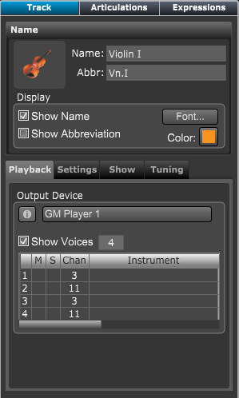

Click the Track Inspector icon on the Control bar or type "Shift I" to open the Track inspector panel.

|
Name
Set the tracks name, abbreviation, icon, color, and global track name font.
Playback Tab
- Set track's number of voices for this track.
- Set tracks' MIDI playback parameters.
Settings Tab
- Set tracks' display style, clef, range, and transposition
- Set the default stem direction for each track voice.
Show Tab
- Choose the track's notation elements to be displayed.
- Set how key signatures on transposed tracks are displayed.
Tuning Tab
- Set the string tuning for guitar tracks.
- Set what is displayed on tablature staves.
|